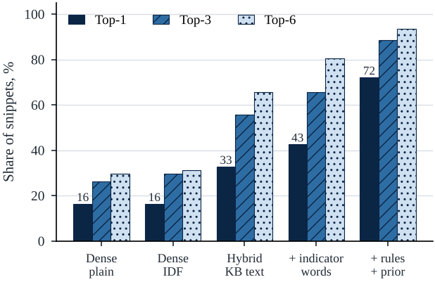
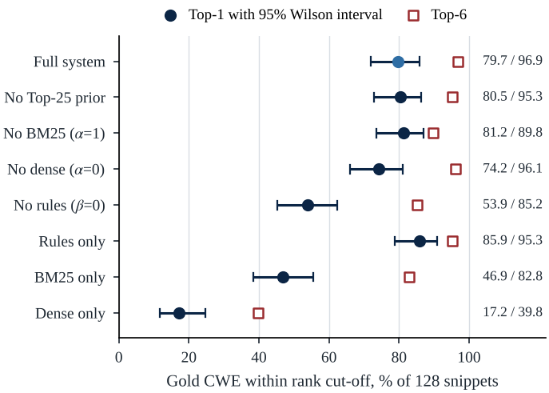
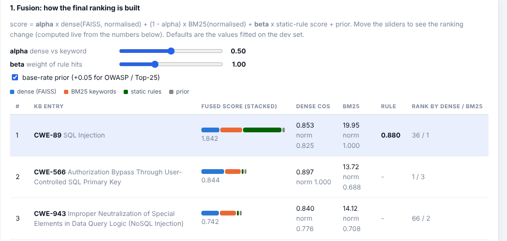
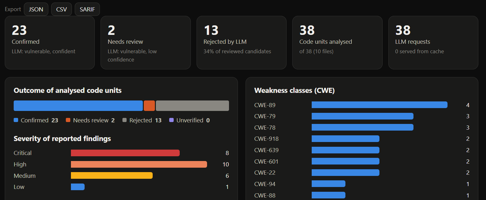
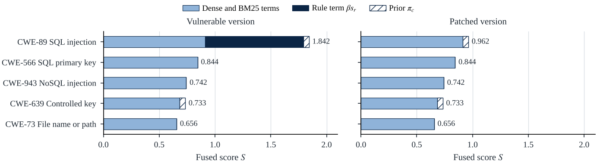

Find the weakness. Check it. See why.
A scanner that retrieves OWASP and CWE evidence for every function in a repository, has a language model check each match, and shows every score behind the result. It reads Python, JavaScript/TypeScript, Java, Kotlin, PHP, Go, C#, Ruby, C/C++ and Rust, and it runs on plain Python.
How a scan works
Retrieval and rules propose candidates and reasons. A model judges only after that, and severity comes from a fixed table, not from the model.
Results
Does the correct CWE come back from the 269-entry knowledge base? Measured on 128 snippets (61 Python and JavaScript, 67 in eight other languages) written after the sink rules were frozen.
| Retriever | Top-1 | Top-6 |
|---|---|---|
| Dense (averaged GloVe) only | 17.2% | 39.8% |
| BM25 only | 46.9% | 82.8% |
| Sink rules only | 85.9% | 95.3% |
| Full system | 79.7% | 96.9% |


What you see
The Inspector breaks a match into its parts, so a reviewer can see why an entry ranked where it did.



Run it
Python 3.10 to 3.14. No compiler, no GPU, no model download. A free Groq or Gemini key is optional; without one, findings stay marked Unverified.
git clone https://github.com/aakashsivakumar20/RAG-vuln-detection.git
cd RAG-vuln-detection
./setup.sh # Windows: setup.bat
./run.sh # Windows: run.bat